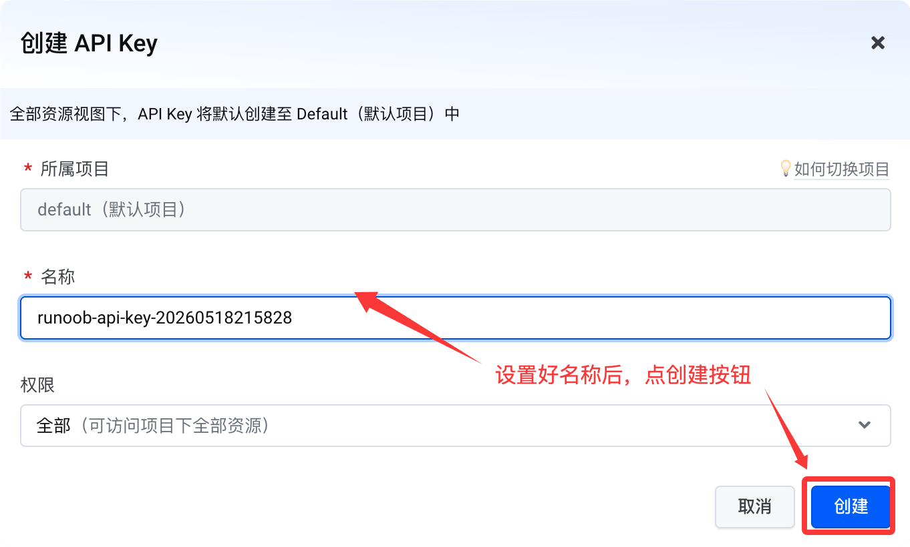
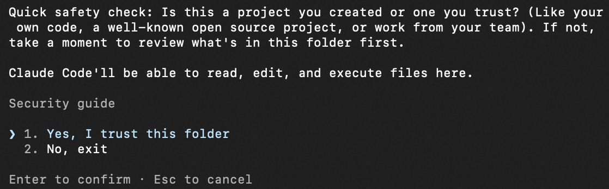
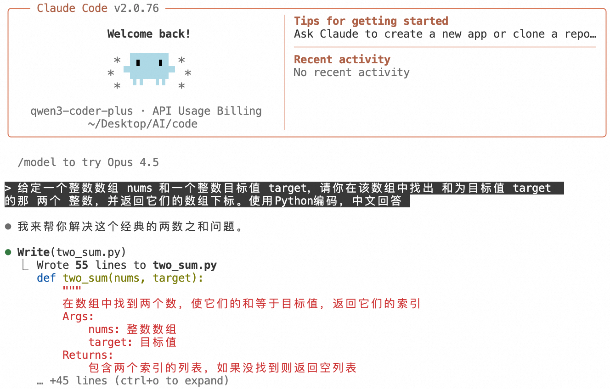
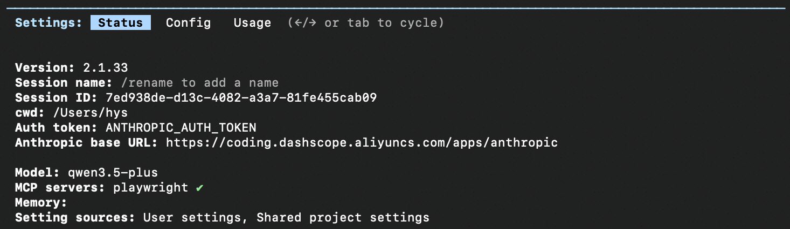

Coding Plan
現在、市場には多くの大規模モデルベンダーがあります。海外ではAnthropic、OpenAI、Grok、Geminiなどがありますが、海外へのアクセスは現在不便です。国内ではDeepSeek、Qwen（千問）、ZLM、Minimaxなどがあります。
Claude Codeでコードを書く際に最も費用がかかるのはトークンです。海外へのアクセスは不便で、しかも高いです。国内のものには現在月額プランがあります。長期利用するなら月額プランを購入するのがお得です。
多くのベンダーがCoding Planを提供しています。これはAIプログラミングツール専用に設計されたサブスクリプションサービスで、Qwen（千問）、GLM、Kimi、MiniMaxなどのトップ大規模モデルを統合し、Cursor、Claude Code、OpenClawなどの主要なAIプログラミングアシスタントに対応しています。固定月額制を採用しており、従量課金APIよりもコストがはるかに低く、料金未払いのリスクも完全に防ぎます。
Coding Plan の主な利点：
- トップクラスのモデルをワンクリックで接続：自分で百煉 API を呼び出す必要はなく、使い慣れたプログラミングツールで最強のモデルを直接使用できます。
- コストが非常に低い：固定月額（Lite ¥40/月、Pro ¥200/月）、初月限定割引はわずか7.9元 / 39.9元。
- 安全で安心：APIの直接接続は禁止されており、インタラクティブなプログラミングツールのみでの使用に限定されるため、乱用によるアカウント停止リスクを回避できます。
- 画像理解サポート：qwen3.5-plus、kimi-k2.5 はスクリーンショット/デザイン画像をアップロードしてコードを直接生成できます。
Coding Plan は以下のツールに対応しています：Cursor、Claude Code、OpenClaw、OpenCode、Cline（VS Code拡張機能）、Kilo Code / Kilo CLI、Qwen Code、Codex など。
方舟 Coding Plan を購読
方舟にアクセスCoding Plan キャンペーン、必要に応じてプランを購読してください。使用量が少なければLite版で十分です。使用量が非常に多い場合はPro版を使用できます。
Coding Plan/Agent Plan最初の2か月は75%オフ
開催期間：2026.06.08-2026.08.07
購入が成功したら、クリックあなたのAPIキーを作成：

次に「作成」ボタンをクリック：

下の目のアイコンをクリックすると、APIキーを表示できます。使用するときはコピーするだけでOKです。

方舟 Coding Planは開発者向けのAIコーディングサブスクリプションサービスであり、効率的な開発を支援します。主な利点は以下のとおりです：
- 豊富なモデル：主要な大規模言語モデルとEmbeddingモデルに対応し、Doubao、DeepSeek、Kimi、GLM、MiniMaxなどの人気シリーズをカバーしています。
- 幅広いツール互換性：Claude Code、Cursor、Cline、OpenCode、Codex CLI などの主要なAIコーディングツールに対応。
- 利用枠の共有：複数のツールでプランの利用枠を共有でき、柔軟に切り替えてさまざまな開発シーンに対応できます。
- 柔軟なプラン：Lite / Pro など複数のプランを提供し、ライトな開発から高負荷な開発までニーズに対応します。
- 安定した高可用性：マルチテナント分離とリソーススケジューリングにより、ピーク時でも安定してスムーズに動作します。
ツールごとに設定する Base URL は、互換プロトコルによって異なります：
- Anthropic API プロトコル互換ツール：https://ark.cn-beijing.volces.com/api/coding
- OpenAI API プロトコル互換ツール：https://ark.cn-beijing.volces.com/api/coding/v3
注意：https://ark.cn-beijing.volces.com/api/v3 を使用しないでください：この Base URL は Coding Plan の利用枠を消費せず、追加料金が発生します。
Claude Code の設定
Claude Code のインストール後、以下の情報を設定する必要があります：
- ANTHROPIC_BASE_URL：
https://ark.cn-beijing.volces.com/api/coding - ANTHROPIC_AUTH_TOKEN：APIキーを取得
-
ANTHROPIC_MODEL：2つの設定方法に対応
- 具体的なモデル名を設定（例：
kimi-k2.5）、モデルをリアルタイムで切り替え可能 - 設定
ark-code-latest、コンソールからモデルを切り替え
- 具体的なモデル名を設定（例：
具体的なモデル：doubao-seed-2.0-code、doubao-seed-2.0-pro、doubao-seed-2.0-lite、doubao-seed-code、minimax-m2.7、glm-5.1、deepseek-v4-pro、kimi-k2.6。
settings.json の設定
編集または新規作成settings.jsonファイルに次の内容を記述します：
{
"env": {
"ANTHROPIC_AUTH_TOKEN": "<ARK_API_KEY>",
"ANTHROPIC_BASE_URL": "https://ark.cn-beijing.volces.com/api/coding",
"ANTHROPIC_MODEL": "<Model_Name>"
}
}
以下の内容を置き換えてください：
<ARK_API_KEY>：あなたの API キーに置き換え<Model_Name>：必要なモデル名に置き換え、例：kimi-k2.5
settings.json ファイルのパス：
- MacOS / Linux：
~/.claude/settings.json - Windows：
C:\Users\<用户名>\.claude\settings.json
.claude.json の設定：
編集または新規作成.claude.jsonファイルに以下の内容を追加します：
{
"hasCompletedOnboarding": true
}
.claude.json ファイルのパス：
- MacOS / Linux：
~/.claude.json - Windows：
C:\Users\<用户名>\.claude.json
以下は DeepSeek V4 の設定です。ANTHROPIC_AUTH_TOKENの部分を自分のAPIキーに置き換えてください：
{
"env": {
"ANTHROPIC_BASE_URL": "https://ark.cn-beijing.volces.com/api/coding",
"ANTHROPIC_AUTH_TOKEN": "<ARK_API_KEY>",
"API_TIMEOUT_MS": "3000000",
"ANTHROPIC_MODEL": "deepseek-v4-pro[1m]",
"ANTHROPIC_DEFAULT_SONNET_MODEL": "deepseek-v4-pro[1m]",
"ANTHROPIC_DEFAULT_OPUS_MODEL": "deepseek-v4-pro[1m]",
"ANTHROPIC_DEFAULT_HAIKU_MODEL": "deepseek-v4-flash",
"CLAUDE_CODE_EXPERIMENTAL_AGENT_TEAMS": "1",
"ENABLE_TOOL_SEARCH": "true"
},
"effortLevel": "max"
}
Claude Code + CC Switch で方舟 Coding Plan を使用する設定の詳細はこちら：https://www.runoob.com/claude-code/volcengine-coding-plan.html
その他の設定ドキュメントはこちら：https://www.volcengine.com/docs/82379/1928262
Alibaba Coding Plan を購読
Coding Plan は基本的に入手が難しく、しかも提供終了となるため、Alibabaは現在 Token Plan に変更しています。こちらを参照：Alibaba Cloud 百煉 Token Plan
- OpenAI 互換：https://token-plan.cn-beijing.maas.aliyuncs.com/compatible-mode/v1
- Anthropic 互換：https://token-plan.cn-beijing.maas.aliyuncs.com/apps/anthropic
先に百煉の Coding Plan プランを購入する必要があります：百煉の Coding Plan キャンペーンページ
使用量が非常に多い場合はPro版を使用できます。Pro版はLite版の5倍の利用枠で、対応モデルはすべて同じです（現在非常に人気があり、Lite版は9:30に購入開始となります）。
Coding Plan プランを購入したら、Coding Planページで、Coding Plan 専用の API キー（形式: sk-sp-xxxxx）を取得できます。
その後、AIツールで以下のいずれかの Base URL を設定する必要があります（ツールによって異なります）：
- Anthropic 互換プロトコル：https://coding.dashscope.aliyuncs.com/apps/anthropic
- OpenAI 互換プロトコル（OpenClaw で使用可能）：https://coding.dashscope.aliyuncs.com/v1
より人気のあるアプリケーションにも対応するドキュメントがあります：

説明：Coding Plan 専用の API キーと Base URL は、百煉の従量課金 API キー（sk-xxxxx）および Base URL（https://dashscope.aliyuncs.com/xxxxxx）とは互換性がありません。混用しないでください。
入手できない場合は、リソースパックを直接購入すると、よりお得に利用できます：https://cn.aliyun.com/benefit?from_alibabacloud=&userCode=i5mn5r7m

Claude Code の設定
Claude Code のインストール後、以下の情報を設定します：
- ANTHROPIC_BASE_URL：https://ark.cn-beijing.volces.com/api/coding
- ANTHROPIC_AUTH_TOKEN：APIキーを取得
- ANTHROPIC_MODEL：Model Name（doubao-seed-2.0-code、doubao-seed-2.0-pro、doubao-seed-2.0-lite、doubao-seed-code、minimax-m2.5、glm-4.7、deepseek-v3.2、kimi-k2.5）を設定する方法と、ark-code-latest（コンソールでモデルを切り替え）を設定する方法の2通りに対応しています。
設定手順は以下のとおりです：
settings.json ファイルを編集または新規作成し、変更が必要な設定情報は以下のとおりです：
- <ARK_API_KEY>：ご自身の API Key に置き換えてください
- <Model_Name>：使用するモデル情報に更新してください（例：kimi-k2.5）。サポートされているモデル情報はモデル設定を参照してください。
システムによって設定ファイルのパスが異なります。具体的には以下のとおりです：
- MacOS & Linux：~/.claude/settings.json
- Windows：C:\Users\<ユーザー名>\.claude\settings.json
{
"env": {
"ANTHROPIC_AUTH_TOKEN": "<ARK_API_KEY>",
"ANTHROPIC_BASE_URL": "https://ark.cn-beijing.volces.com/api/coding",
"ANTHROPIC_MODEL": "<Model_Name>"
}
}
.claude.json ファイルを編集または新規作成し、hasCompletedOnboarding フィールドの値を true に変更または追加します。
システムによって設定ファイルのパスが異なります。具体的には以下のとおりです：
- MacOS & Linux：~/.claude.json
- Windows：C:\Users\<ユーザー名>\.claude.json
{
"hasCompletedOnboarding": true
}
設定ファイルを保存した後、新しいターミナルウィンドウで後続のコマンドを実行します。
Claude Code での Coding Plan 設定
Claude Code で百炼 Coding Plan に接続するには、以下の情報を設定する必要があります：
- ANTHROPIC_BASE_URL：に設定しますhttps://coding.dashscope.aliyuncs.com/apps/anthropic。
- ANTHROPIC_AUTH_TOKEN：に設定しますCoding Plan専用 API Key。
- ANTHROPIC_MODEL：Coding Plan がサポートするモデルに設定します：qwen3.5-plus（画像理解対応）、kimi-k2.5（画像理解対応）、glm-5、MiniMax-M2.5。
macOS/Linux
設定ファイルを作成して開く~/.claude/settings.json。
~はユーザーのホームディレクトリを表します。もし.claudeディレクトリが存在しない場合は、先に作成する必要があります。ターミナルで実行できます：mkdir -p ~/.claudeで作成します。
vim ~/.claude/settings.json
設定ファイルを編集し、YOUR_API_KEY を Coding Plan 専用 API Key に置き換えます。
{
"env": {
"ANTHROPIC_AUTH_TOKEN": "YOUR_API_KEY",
"ANTHROPIC_BASE_URL": "https://coding.dashscope.aliyuncs.com/apps/anthropic",
"ANTHROPIC_MODEL": "qwen3.5-plus"
}
}設定ファイルを保存し、ターミナルを開き直すと反映されます。
~/.claude.json ファイルを編集または新規作成し、hasCompletedOnboarding フィールドの値を true に設定してファイルを保存します。
{
"hasCompletedOnboarding": true
}hasCompletedOnboarding はトップレベルのフィールドとしてください。他のフィールドにネストしないでください。
この手順により、Claude Code 起動時のエラー「Unable to connect to Anthropic services」を回避できます。
Windows
設定ファイルを作成して開くC:\Users\ユーザー名\.claude\settings.json。
1、CMD コマンド方式
ディレクトリを作成：
if not exist "%USERPROFILE%\.claude" mkdir "%USERPROFILE%\.claude"
ファイルを作成して開く：
notepad "%USERPROFILE%\.claude\settings.json"
設定ファイルを編集し、YOUR_API_KEY を Coding Plan 専用 API Key に置き換えます。
{
"env": {
"ANTHROPIC_AUTH_TOKEN": "YOUR_API_KEY",
"ANTHROPIC_BASE_URL": "https://coding.dashscope.aliyuncs.com/apps/anthropic",
"ANTHROPIC_MODEL": "qwen3.5-plus"
}
}設定ファイルを保存し、ターミナルを開き直すと反映されます。
C:\Users\ユーザー名\.claude.json ファイルを編集または新規作成し、hasCompletedOnboarding フィールドの値を true に設定して、ファイルを保存します。
{
"hasCompletedOnboarding": true
}
2、PowerShell コマンド方式
ディレクトリを作成：
mkdir -Force $HOME\.claude
ファイルを作成して開く：
notepad $HOME\.claude\settings.json
設定ファイルを編集し、YOUR_API_KEY を Coding Plan 専用 API Key に置き換えます。
{
"env": {
"ANTHROPIC_AUTH_TOKEN": "YOUR_API_KEY",
"ANTHROPIC_BASE_URL": "https://coding.dashscope.aliyuncs.com/apps/anthropic",
"ANTHROPIC_MODEL": "qwen3.5-plus"
}
}設定ファイルを保存し、ターミナルを開き直すと反映されます。
C:\Users\ユーザー名\.claude.json ファイルを編集または新規作成し、hasCompletedOnboarding フィールドの値を true に設定して、ファイルを保存します。
{
"hasCompletedOnboarding": true
}
Claude Code を使用
ターミナルを開き、プロジェクトがあるディレクトリに移動して、以下のコマンドを実行して Claude Code を起動します：
cd path/to/your_project claude
起動後、Claude Code にファイルの実行を許可する必要があります。

/status を入力して、モデル、Base URL、API Key が正しく設定されているか確認します。

Claude Code で対話します。

モデルの切り替え
| 切り替え方法 | 操作説明 | 例 |
|---|---|---|
| 起動時に切り替え | ターミナルで実行claude --model <模型名称>モデルを指定して Claude Code を起動 |
claude --model qwen3-coder-next |
| セッション中の切り替え | ダイアログボックスに入力/model <模型名称>コマンドでモデルを切り替え |
/model qwen3-coder-next |
よく使われるコマンドまとめ
| コマンド | 説明 | 例 |
|---|---|---|
/init |
プロジェクトのルートディレクトリに CLAUDE.md ファイルを生成し、プロジェクトレベルの指示とコンテキストを定義する | /init |
/status |
現在のモデル、API Key、Base URL などの設定状態を確認する | /status |
/model <模型名称> |
モデルを切り替える | /model qwen3-coder-next |
/clear |
会話履歴をクリアして、新しい会話を開始する | /clear |
/plan |
プランニングモードに入り、プランの分析と議論のみを行い、コードは変更しない | /plan |
/compact |
会話履歴を圧縮して、コンテキストウィンドウのスペースを解放する | /compact |
/config |
設定メニューを開き、言語やテーマなどを設定できる | /config |
その他の拡張機能詳細は以下を参照：https://help.aliyun.com/zh/model-studio/coding-plan-quickstart
クリックしてノートを共有
<p style="font-size:14px;">ノートはこの記事の内容を拡張したものである必要があります！</p><br> <p style="font-size:12px;"><a href="../tougao.html" target="_blank">記事の投稿はこちらをクリック</a></p> <p style="font-size:14px;"><a href="../w3cnote/runoob-user-test-intro.html" target="_blank">登録招待コードの取得方法</a></p> <h3 class="text-muted"><i class="fa fa-info-circle" aria-hidden="true"></i> ノートを共有する前に<a href=";.html" class="runoob-pop">ログイン</a>が必要です！</h3> <p><a href="../w3cnote/runoob-user-test-intro.html" target="_blank">登録招待コードの取得方法</a></p>